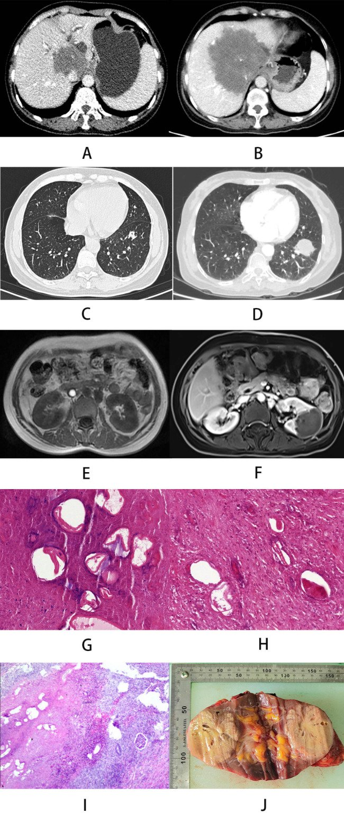
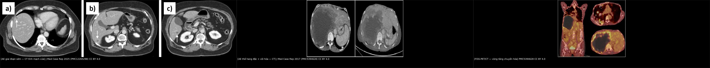
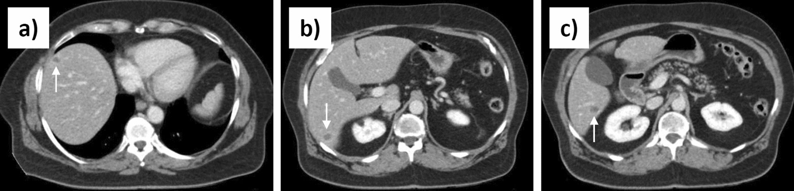
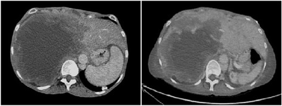
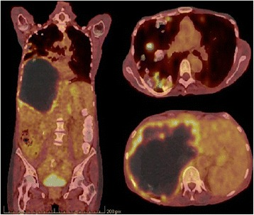

144 — Sán thể hang ở gan: khối giả u thâm nhiễm / Alveolar echinococcosis of the liver
Tags: pattern:gia-u pattern:tieu-dang-nang vung:gan score:PNM protocol:CT-bung-co-can-quang protocol:MRI-gan incidentaloma:ton-thuong-gan
Mức chắc chắn (certainty): tổng hợp y văn (literature synthesis) — bài tổng quan từ 1 review lâm sàng + 4 ca bệnh có ảnh gốc, mọi con số đều truy được về nguồn trong sources.md; các ngưỡng chưa đối chiếu toàn văn được ghi rõ "chưa rõ".
1. Tổng quan bệnh học – cơ chế hình ảnh
Tác nhân: Echinococcus multilocularis (sán cáo — fox tapeworm). Vật chủ cuối là cáo/chó hoang/wolf; người là vật chủ trung gian ngẫu nhiên, nhiễm qua thức ăn/nước có trứng. Ấu trùng (metacestode) theo tĩnh mạch cửa/bạch mạch về gan là cơ quan đích đầu tiên ở gần như toàn bộ ca.
Vì sao gọi "thể hang" (alveolar): khác hẳn nang sán dạng nang (cystic echinococcosis — CE), AE không có vỏ xơ (pericyst), ấu trùng mọc thành vô số vi nang (alveoli) xâm lấn theo khoảng kẽ như u, phá hủy nhu mô, xâm lấn đường mật và mạch máu. Mô ký sinh + phản ứng xơ hóa của vật chủ + hoại tử trung tâm tạo thành một khối giả u.
Thời gian ủ bệnh 5–15 năm (review PMC11163348) — gần như không triệu chứng giai đoạn đầu, nên phần lớn phát hiện tình cờ khi siêu âm vì lý do khác; khi có triệu chứng thường đã xâm lấn rốn gan/cơ hoành. Không điều trị, bệnh dẫn tới tử vong trong vòng 10 năm kể từ khi gan bị tổn thương (review PMC11163348).
TẠI SAO hình ảnh trông như vậy (giải thích theo vật lý, không liệt kê tín hiệu):
- CT — không ngấm thuốc: trung tâm tổn thương là hoại tử + xơ, không có lòng mạch nuôi; AE không tăng sinh mạch như HCC. Vì vậy khối giảm đậm độ, không bắt thuốc ở thì động mạch và tĩnh mạch cửa, chỉ có thể có viền ngấm mỏng, không liên tục do viêm quanh tổn thương. Ở tổn thương sớm, đậm độ trung bình đo được là 27,7 HU (ca PMC12265298) — cao hơn nước (0–20 HU) — gợi ý thành phần dịch–hoại tử giàu protein (suy luận từ đậm độ, không phải kết quả mô học), nhưng vẫn thấp hơn nhu mô gan.
- Vôi hóa: canxi hóa loạn dưỡng trong vùng hoại tử/xơ, thấy rõ nhất trên CT. Tần suất vôi hóa trong AE gan chưa có con số thống nhất trong các nguồn đã đọc — chưa rõ, cần tra; (con số 13,2% / 35% thường được trích là của đoàn hệ sán xương–chậu, không dùng cho AE gan — xem bài 302). Vôi hóa không đồng nghĩa ký sinh đã chết.
- MRI — T2 "sáng lẫn tối": vi nang chứa dịch → T2 rất sáng; dải xơ/collagen → T2 tối (collagen ít proton linh động, T2 ngắn). Vì thế tổn thương có dạng "chùm nho" vi nang sáng nằm trong nền xơ tối, bờ không đều. T1 giảm tín hiệu. Sau tiêm, chỉ viền mỏng/không liên tục ngấm thuốc.
- FDG-PET: tăng chuyển hóa nằm ở vành viêm quanh tổn thương (đại thực bào/lympho), không nằm trong nang — nên PET phản ánh hoạt tính gián tiếp, và PET âm không chứng minh ký sinh đã chết (review PMC13566459).

Bảng A–B: tổn thương gan năm 2017 → 2020 xâm lấn hơn; C–D: nốt phổi to lên; E–F: MRI thận 2020 xuất hiện tổn thương chiếm chỗ; G–J: mô bệnh và đại thể. Nguồn: BMC Infect Dis 2023 (PMC10638689), Fig. 1 — CC BY 4.0.
Ngưỡng định lượng dùng ngay trong bài: ủ bệnh 5–15 năm; Kodama type 2 ~40%, type 3 ~46% (review PMC11163348); albendazole 10–15 mg/kg/ngày chia 2 lần (review PMC13566459); mebendazole 40–50 mg/kg/ngày chia 3 lần (dự phòng khi không dung nạp albendazole); ngừng thuốc khi ALT > 3× giới hạn bình thường hoặc có suy tủy (review PMC13566459).
2. Mẫu hình + chẩn đoán phân biệt theo vị trí (gamut)
- Theo hình thái Kodama (dựa trên MRI/CT) — 5 type:
- Type 1: chỉ gồm nhiều vi nang, không có thành phần đặc.
- Type 2: vi nang + thành phần đặc (hay gặp nhất cùng type 3, ~40%).
- Type 3: thành phần đặc + nang lớn bờ không đều (~46%).
- Type 4: đặc thuần — dễ nhầm u gan đặc/ung thư.
- Type 5: nang lớn thuần — dễ nhầm nang gan đơn thuần.
- Theo vị trí (location):
- Gan phải (hay gặp nhất) → khối lớn, có thể vôi hóa.
- Rốn gan/đường mật → vàng da, giãn đường mật trong gan; dễ nhầm cholangiocarcinoma.
- Tĩnh mạch gan/IVC → huyết khối u lòng mạch, xâm lấn cơ hoành.
- Phổi (hay gặp nhất trong di căn xa): nốt/khối, có thể hang hóa; y văn được ca bệnh trích dẫn ghi 7–20% (PMC8255489).
- Não: nang nhiều thùy + phù quanh nang, viền ngấm thuốc; được xem là dấu hiệu giai đoạn cuối (PMC8255489).
- Xương: tiêu xương, ít vôi hóa — xem bài 302 – Nang sán xương & cột sống ở trẻ.
- Gamut "khối gan có vôi hóa + không ngấm thuốc": AE · CE (vôi hóa vỏ nang) · di căn niêm dịch (mucinous metastasis) · u máu xơ hóa/thoái triển · áp-xe xơ hóa · cholangiocarcinoma (thường có ngấm thuốc).
3. Bảng so sánh phân biệt (ma trận đối chiếu)
| Thực thể (entity) | Hình ảnh điển hình | Chốt vào (rule-in) | Chốt loại (rule-out) | Gợi ý xác nhận |
|---|---|---|---|---|
| AE (sán thể hang) | Khối thâm nhiễm bờ không đều, vi nang T2 sáng trong nền xơ tối, trung tâm không ngấm, vôi hóa rải rác, đậm độ sớm ~27,7 HU | Vi nang + vôi hóa + không ngấm trung tâm + bối cảnh dịch tễ (cáo/chó, vùng dịch tễ) | Không có vi nang, ngấm mạnh thì động mạch, washout điển hình → nghĩ HCC/iCCA | ELISA Em2/Em2+/recEm18 → immunoblot; sinh thiết ngoại vi + albendazole quanh thủ thuật |
| CE (nang sán dạng nang) | Nang có vỏ rõ, vôi hóa vỏ, có thể có nang con ("bánh xe"), không xâm lấn | Vỏ xơ rõ + vôi hóa vỏ + không xâm lấn mô kẽ | Bờ mờ, xâm lấn, vi nang lan tỏa → AE | Siêu âm phân độ WHO CE 0–5; huyết thanh; PAIR chỉ dành cho CE |
| iCCA (ung thư đường mật trong gan) | Khối đặc, ngấm thuốc thì muộn tiến triển, hẹp/co kéo đường mật, teo thùy | Ngấm thuốc tăng dần + xâm lấn đường mật + CA 19-9 tăng | Không ngấm, vôi hóa trong lòng, vi nang → nghĩ AE | CE-MRI/MRCP, sinh thiết, hội chẩn |
| Nang gan đơn thuần | Nang nước đồng nhất, thành < 1 mm, 0–20 HU, không vôi hóa | Đồng nhất + thành mỏng + không vôi hóa + không ngấm | Vôi hóa, vách, vi nang, đậm độ > 20 HU → không phải nang đơn thuần | Siêu âm; theo dõi |
| Di căn niêm dịch | Nang/đặc hỗn hợp, có thể vôi hóa, nhiều ổ, có ổ nguyên phát | Nhiều tổn thương + ổ nguyên phát đã biết | Đơn độc, vi nang lan tỏa → nghĩ AE | CT ngực/bụng, PET, mô bệnh |
| Áp-xe gan xơ hóa | Ổ dịch có vách, khí trong, viêm mô quanh | Sốt + CRP cao + khí trong ổ | Không sốt, tổn thương mạn tính vôi hóa → nghĩ AE | Chọc hút/dẫn lưu, cấy |

Trái: 3 tổn thương giảm đậm độ nhỏ ở gan phải (mũi tên), giai đoạn sớm. Giữa: khối hang đặc lớn có vôi hóa. Phải: FDG-PET/CT — tăng chuyển hóa dạng vòng quanh tổn thương. Nguồn: J Med Case Rep 2025 (PMC12265298) và J Med Case Rep 2017 (PMC5394628), CC BY 4.0; ảnh ghép letterbox, không crop.4. Protocol chụp + hệ phân độ/điểm chuẩn hóa
- Chuỗi hình ảnh tối thiểu: siêu âm bụng (+ CEUS khi cần phân biệt với u máu) → CT bụng 3 thì (động mạch, tĩnh mạch cửa, muộn) + CT ngực → MRI gan (T1 in/opposed phase, T2, DWI/ADC, T1 sau tiêm thì muộn) và MRCP nếu vàng da/giãn đường mật → FDG-PET/CT khi cần đánh giá hoạt tính hoặc tìm di căn.
- Đo và ghi: kích thước 3 chiều (mm), số vi nang, vị trí so với rốn gan/tĩnh mạch gan/IVC, mức xâm lấn cơ hoành, có/không vôi hóa, có/không giãn đường mật.
- Huyết thanh 2 bước: ELISA với kháng nguyên tinh khiết/tái tổ hợp (Em2, Em2+, recEm18) → xác nhận bằng immunoblot. Độ nhạy cao trong bệnh gan; tổn thương sớm có thể âm tính (ca PMC12265298: IgG 11 U/mL, Em2+ âm).
- Phân độ PNM (WHO-IWGE) — thay cho TNM vì AE mọc như u:
- P = khối ký sinh trong gan (P0–P4, theo số/vị trí thùy gan bị chiếm),
- N = xâm lấn cơ quan lân cận/hạch (N0–N1),
- M = di căn xa (M0–M1).
- Ngưỡng mm chi tiết của từng bậc P1–P4 chưa rõ — cần tra toàn văn WHO-IWGE (các nguồn đã đọc chỉ mô tả cấu trúc PNM, không đưa bảng mm).
- Định nghĩa ca bệnh (Brunetti/WHO): xác định = mô bệnh học; có thể = hình ảnh điển hình + huyết thanh dương; nghi ngờ = hình ảnh gợi ý, huyết thanh âm.
- Điều trị: phẫu thuật cắt gan + albendazole 10–15 mg/kg/ngày chia 2 lần, uống cùng bữa nhiều mỡ (tăng sinh khả dụng). Không mổ được → albendazole suốt đời (thuốc chỉ kìm ký sinh — parasitostatic, không diệt). Ghép gan chọn lọc khi tăng áp cửa/báng/xơ gan mật thứ phát. Can thiệp: dẫn lưu chỉ để xử trí biến chứng (nang lớn, áp-xe), ERCP khi tắc mật. Không dùng PAIR để điều trị AE — PAIR (chọc hút – bơm chất diệt – hút lại) là phác đồ của CE.
- Theo dõi: TDM albendazole sulfoxide lấy máu 4 giờ sau uống, ở tuần 4, 8, 12 rồi theo lịch; sau mổ chụp hình ảnh 3 tháng, sau đó mỗi năm đến 10 năm (MRI là lựa chọn tốt nhất); theo dõi bằng recEm18 — kháng thể giảm nhanh sau cắt triệt để. Ngừng thuốc khi PET âm + recEm18 âm (review PMC13566459).
flowchart TD
A[Khối gan giả u: vôi hóa, vi nang, không ngấm thuốc] --> B{Huyết thanh 2 bước<br/>Em2/Em2+/recEm18}
B -->|Dương| C[Chẩn đoán AE có thể]
B -->|Âm nhưng hình ảnh điển hình| D[Sinh thiết vùng NGOẠI VI<br/>+ albendazole quanh thủ thuật]
D --> C
C --> E[Phân độ PNM<br/>CT ngực + MRI gan/sọ]
E --> F{Cắt gan được R0?}
F -->|Có| G[Phẫu thuật + albendazole ≥ 2 năm<br/>theo dõi recEm18 + MRI]
F -->|Không| H[Albendazole suốt đời<br/>TDM 4-8-12 tuần]
H --> I{PET + recEm18 âm<br/>và tổn thương ổn định?}
I -->|Có| J[Cân nhắc ngừng thuốc<br/>theo dõi chặt]
I -->|Không| H
5. Biến thể bình thường và cạm bẫy
- Huyết thanh âm không loại trừ AE: tổn thương sớm, nhỏ, được "cô lập" bởi vành hoại tử xơ có thể cho IgG chỉ ở ngưỡng (11 U/mL) và Em2+ âm (ca PMC12265298). Đừng vì huyết thanh âm mà bỏ chẩn đoán khi hình ảnh điển hình.
- PET âm ≠ ký sinh đã chết: PET chỉ đo phản ứng viêm quanh tổn thương; PET âm = hoạt tính bị ức chế, không phải đã khỏi (review PMC13566459).
- Sinh thiết sai chỗ: vùng trung tâm hoại tử thường không có mô ký sinh → âm giả; phải lấy vùng ngoại vi (nơi có vi nang và "spems"), và dùng albendazole quanh thủ thuật để giảm nguy cơ gieo rắc (ca PMC12265298).
- Vôi hóa không phải "bất hoạt": vôi hóa tồn tại lâu trong khi ký sinh còn sống; đánh giá hoạt tính phải phối hợp MRI (vi nang còn sáng) + PET + recEm18.
- Hạch to/PET dương không chắc có ký sinh sống: hạch giãn hoặc tăng FDG có thể chỉ là viêm; không quyết định cắt nạo hạch chỉ vì PET (review PMC12265298).
- AE không tăng sinh mạch: không có kiểu "ngấm mạnh thì động mạch + washout" của HCC — nếu thấy kiểu đó, nghĩ lại chẩn đoán.
- Cạm bẫy chết người: nhầm AE với CE rồi chọc hút/PAIR → nguy cơ sốc phản vệ và gieo rắc ký sinh. Trước mọi can thiệp nang gan "lạ", phải loại AE.
6. Tự lượng giá — Blind Quiz
Ca 1 — Nữ 65 tuổi, không triệu chứng, siêu âm kiểm tra sức khỏe phát hiện 3 nốt nhỏ gan phải. Nhìn CT trước, mô tả.

- Gợi ý lâm sàng: không sốt, không vàng da, không tiền sử ung thư; sống ở vùng có cáo.
- Câu hỏi: Đậm độ tổn thương so với nhu mô gan? Có ngấm thuốc không? 3 chẩn đoán phân biệt và bước xác nhận đầu tay?
Bấm để hiện đáp án (findings + chẩn đoán)
- Dấu hiệu: ba tổn thương giảm đậm độ, bờ không đều, ở phân thùy VIII và VI (mũi tên); đậm độ trung bình 27,7 HU, không ngấm thuốc; không vôi hóa rõ ở giai đoạn này.
- Chẩn đoán: AE giai đoạn sớm (initial stage) — xác nhận bằng sinh thiết lần hai vùng ngoại vi + hóa mô miễn dịch EM2G11 dương tính; huyết thanh ban đầu chỉ ở ngưỡng.
- Vì sao khó: tổn thương nhỏ, chưa vôi hóa, huyết thanh âm — hình ảnh rất dễ bị đọc là "nốt lành" hoặc di căn nhỏ.
- Nguồn: J Med Case Rep 2025 (PMC12265298), Fig. 2 — CC BY 4.0.
Ca 2 — Nam, đau hạ sườn phải, CT bụng thấy khối lớn gan phải. Mô tả trước khi mở đáp án.

- Gợi ý lâm sàng: gan to, không tiền sử ung thư; CT thấy khối 15 cm bờ đa cung, có vôi hóa quanh tổn thương, xâm lấn rốn gan.
- Câu hỏi: Vì sao khối "giống ung thư" mà lại là ký sinh? Dấu hiệu nào giúp phân biệt với cholangiocarcinoma?
Bấm để hiện đáp án
- Dấu hiệu: khối 15 cm dạng nang–đặc hỗn hợp, bờ đa cung nhỏ, vôi hóa quanh tổn thương, xâm lấn rốn gan gây giãn đường mật; phần đặc không ngấm thuốc.
- Chẩn đoán: AE thể lan tỏa (bệnh nhân còn nốt phổi vôi hóa tới 50 mm, một số hang hóa) — bắt chước di căn ác tính.
- Chốt phân biệt: vôi hóa + vi nang + không ngấm trung tâm + bối cảnh dịch tễ; iCCA thường ngấm thuốc tiến triển và không có vi nang.
- Nguồn: J Med Case Rep 2017 (PMC5394628), Fig. 1 — CC BY 4.0.
Ca 3 — Cùng bệnh nhân, FDG-PET/CT được chỉ định. Vòng sáng quanh tổn thương nói lên điều gì?

- Câu hỏi: FDG tăng nằm ở đâu (trong nang hay quanh nang)? Nếu PET âm sau 2 năm điều trị thì kết luận được gì?
Bấm để hiện đáp án
- Dấu hiệu: vòng tăng chuyển hóa mạnh quanh khối gan phải (viêm quanh tổn thương), trong khi trung tâm hoại tử/vôi hóa không tăng; phổi có nhiều ổ tăng chuyển hóa.
- Ý nghĩa: FDG phản ánh hoạt tính gián tiếp qua phản ứng viêm; PET âm = hoạt tính bị ức chế, KHÔNG phải ký sinh đã chết.
- Nguồn: J Med Case Rep 2017 (PMC5394628), Fig. 3 — CC BY 4.0.
Bài liên quan chéo
- 100 – Tổng quan hệ Bụng
- 139 – Sán lá gan (fasciliasis) & nang sán gan
- 106 – Xơ hóa đường mật do chất diệt đầu sán (caustic sclerosing cholangitis)
- 128 – Ký sinh trùng đường mật
- 121 – LI-RADS: khối gan & ngấm thuốc
- 129 – IPNB & u nhầy đường mật
- 173 – Ung thư đường mật trong gan trên nền Caroli
- 302 – Nang sán xương & cột sống ở trẻ
- 030 – Đông đặc xẹp phổi (di căn phổi AE có thể hang hóa — đối chiếu mẫu hình hang)
Ảnh
- Tên file:
144_san-the-hang_<Modality>_<SourceID>.jpg; nguồn + giấy phép từng ảnh ởimages/CREDITS.md. - Ảnh ghép
composite_144_AE-tien-trien.jpgtạo bằngtools/make_composite.py(letterbox nền đen, không crop/kéo giãn).
Không dùng để chẩn đoán độc lập khi chưa có người hướng dẫn.